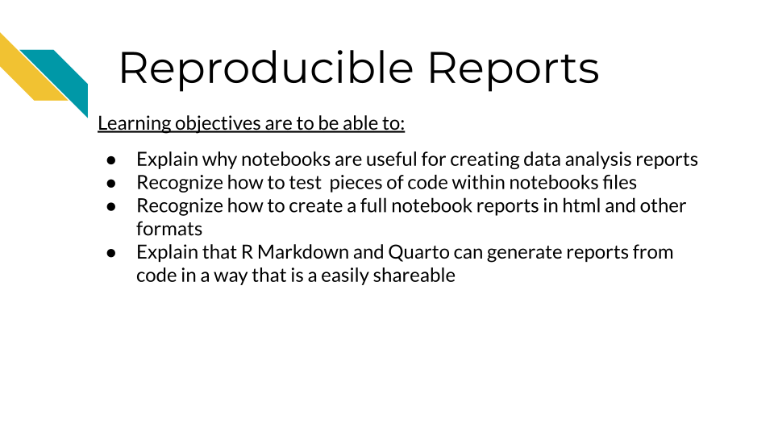
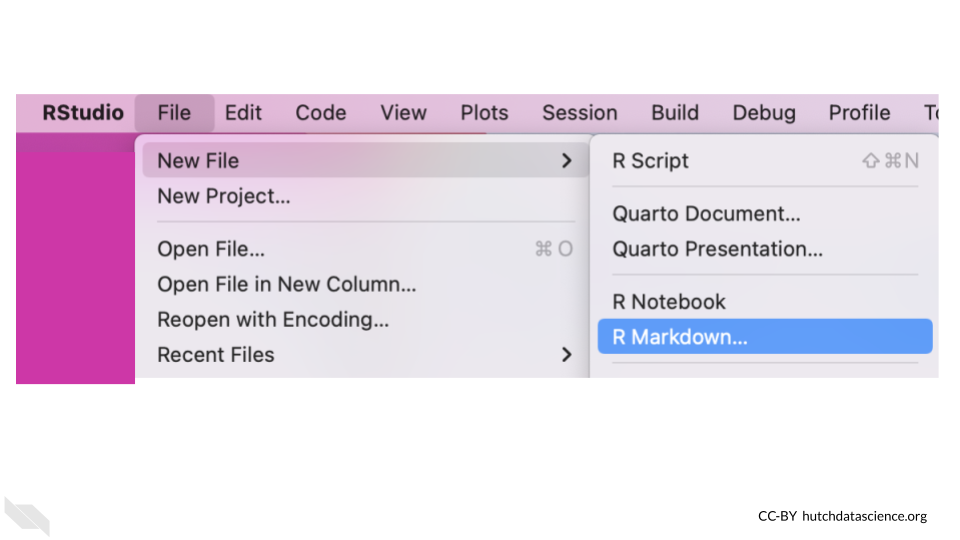

Chapter 6 Reproducible Reports

6.1 Notebook reports support reproducibility
Using notebooks can help you more transparently show what you did for your analysis. They can also help you to test that your code works as expected. Scripts allow you to save code, but they do not allow you to have the following additional benefits.
The following are reasons why notebooks help reproducibility:
- They allow you to show and share your code and the output of your code in one place! (This can be done in several ways depending on what you want.)
- They allow you to test if your code works outside of what is active in your environment
- They allow you to test sections and all previous sections of your code, which can help with troubleshooting
- They help you understand what might be wrong with your code in smaller sections of code if you have an issue
6.2 R Markdown or Quarto?
Both R Markdown and Quarto are types of notebooks that have similar functions. R Markdown files end with the suffix .Rmd while quarto files end with .qmd.
Both Qmd and Rmd files are both notebooks that have the benefits we’ve described above. They allow you to document using the markdown language. Plus, because they are so similar you can often just change the suffix of your file and convert between these file types (results may vary depending on the content of the file).
R Markdown was the first R programming notebook on the scene, and has a lot of tools devoted to it because it has been around awhile. In 2022, Posit released the Quarto notebook. So Quarto has a lot of great new features but is still relatively new.
Posit created Quarto with the idea of streamlining document making by allowing for more compatibility with languages beyond R. While R Markdown documents also somewhat allow for other languages, their ability to do this successfully is limited.
6.2.1 R Markdown Pros:
- Time tested, a lot of packages and resources built for it.
- Fundamentally an R notebook and is built around that.
6.2.2 R Markdown Cons:
- Does not always do well running other languages (like Python).
- Does require a lot of extra packages to be installed to do more things with it:
bookdown,distill, etc.
6.2.3 Quarto Pros:
- Built with more compatibility for other languages
- Appears to be more streamlined/centralized and less need for a lot of extra packages to create other types of documents.
6.2.4 Quarto Cons:
- It is still quite new, and the community is still catching up to it, although it appears to be built with backwards compatibility in mind.
- Because it so new, there are still some features that are being developed for Quarto that R Markdown already supports. At this point, these are mostly features that would allow for customization.
6.3 Getting Started with notebooks
Click here for a review on how to create R Markdown files in RStudio.
To open a new R Markdown file by go to File –> New File –>R Markdown in the upper menu of RStudio.

Creating an R Markdown file starts with a pop-up and you can simply click the OK button.

The new pane will open on the upper left.

This pane is where we can write code to save in our R Markdown report.
Thus the lower left pane is where we can test out code (although we do not generally recommend it), but the top pane is where we can write code that we wish to save.
Note that you can also test selected code (or a current line) in an R Markdown file using a keyboard shortcut of Ctrl+Enter on Windows & Linux computers or Cmd+Return on Mac computers.
The top pane where we save code is called the editor. The lower pane where we test code is called the console.

Once open the file your RStudio should look something like this:
6.4 Rendering R Markdown
For this first chapter we will introduce you to R Markdown files, but note there are many great and continually new emerging tutorials to introduce to Quarto notebooks. Most of what we discuss about R Markdown files is also applicable to Quarto and you can often just switch the suffix of your file and have most of your features and code still work.
There is a special Knit button that looks like a ball of yarn with a knitting needle at the top of the R Markdown files that helps you create your report. Since R Markdown files by default have some code, we can press this to see what a rendered report might look like before we start writing our own code.

You will likely be prompted to give the file a name after you press the Knit button and to confirm where you want to save the rendered version.
You will then see in a second or two (after some information is printed on the Render tab in the lower left pane) a screen pop up with the rendered version of the report.
This will look something like this:
Here we can see that there are some headers and text information, as well as some code shown in the gray box. We also see that this code is followed by the output of the code, where we see a summary of the cars dataset.
If you scroll down you will see an example of what a plot looks like in such a report.
Hopefully you can already start to appreciate how useful it can be to send people a report of your code with the output of your code and plots, as opposed to just a simple script, which can’t show the output of our code!
It’s important to note that when we knit an R Markdown file, it will test our code as if we have an empty environment and it will rely on only the code written in the R Markdown file. It can’t use code that was tested in the Console or run interactively in the R Markdown file (more on that soon).
This process really helps with reproducibility because it helps us make sure that all the instructions needed (loading packages, assigning objects, etc) are within the code that we saved in the R Markdown file.
If anything is missing, the file will either not knit and you will get an error, or you may see that the output of the code is different than you expected.
Now let’s discuss how to start writing code in such a file.
6.5 Writing code in R Markdown files
6.5.1 The YAML
At the top of an R Markdown file you will see some special code that is called YAML code. It is commonly used to configure programming projects. It does the same for our R Markdown reports. A major difference between R and YAML is that spacing really matters for YAML.
What do we mean by configure? Configuration in programming generally refers to setting things up.
- Knit - Knitting an R Markdown file executes all the code and then converts the file into a rendered report of a different file type
- YAML - A language that helps set things up and shows up by default when you open an R Markdown file. It is written between the two
---. - Configuration - A setup for a programming project.
Here we can see what the top of an R Markdown file looks like after we first open one.
You can modify the "Untitled" text after title: to specify the title of your report. If you want to you can also change the author section where it says "your name" in the example.
6.5.2 Code chunks
Next as we scroll down, we will see gray section with some notation which is called a code “chunk”.
The notation here means the following:
- The three back ticks
"```"mark the boundaries of where code should be placed. This is what we call a code chunk. - The
{r}indicates that we are going to write the code using R code. - Extra information can be added inside the curly bracket
{}notation to give the chunk a name, in this case it is calledsetup. - The
include = FALSEmeans that it will not show up in the rendered report.
This first chunk tells the document how additional chunks should show up in the rendered report by default. Here it says that code should show up with echo = TRUE in the report. You don’t need to worry too much about any of this now, just recognize that this is a chunk of code.
As we scroll past some text within the R Markdown file, we will see another chunk.
This chunk also has a name, “cars”. It is not necessary to name chunks, but it can help you to navigate to a particular chunk later, if you do name them.
6.5.3 Running chunks
Here we will see a green triangular button with its point facing to the right. This is the play button. If you try pressing this button inside of RStudio, you will see a preview of what the code does. It should show the summary of the cars data.
Pretty nifty!
This is similar to testing our code in the console, in that if we assign an object it will show up in the environment.
- Code chunk - A piece of code in an R Markdown file. The code can be previewed pressing the play button for the chunk, which is equivalent to running the code in the console.
Writing our code in chunks (as opposed to one long script) can help with reproducibility, as we can better determine where possible changes may have occurred and how that influenced the results in a step-wise fashion, instead of just one final output.
6.5.4 Running previous chunks
You may also notice that there is another button to the left of the play button. This button allows you to play all previous chunks before this chunk.
This is super helpful for reproducibility in terms of making sure that your code is working properly with all the necessary pieces. Sometimes code just works during an R session (and not after) simply because it is relying on an object or code currently in our environment that is not saved in our notebook. For example, code that was tested in the console but not saved will not be run the next time we try to knit our R Markdown file.
Issues can happen if you run a code chunk out of order or change the code in a chunk after running it previously. This can make you think that you have all the code that you need saved to obtain the result that you found, when in fact you do not.
Therefore we recommend cleaning the environment (which we will describe in the next section) and testing out that your chunks work well together by knitting the document. If you get an error you can run subsets of your code chunks together using the play previous button, until you identify where the issue occurred.
6.6 Cleaning the environment
We suggest cleaning out your environment somewhat regularly when you are interactively testing your R Markdown file using chunks. To do so, you can press the button that looks like a broom in the upper right pane.
The ultimate test though is to press the Knit button and make sure you have all the code necessary to allow the report to render.
6.7 Restarting R Session
To really test your code, every once in a while, we suggest restarting your R Session and trying to Knit your R Markdown file to make sure that anything you loaded during your previous session (but didn’t save in your code) wasn’t allowing your code to run successfully.
To do so, you can click on the Session tab of the upper menu of RStudio and click Restart R.
6.8 Chunk setup
You may find that sometimes you want to hide the code in a report, or hide the output. This can be for a variety of reasons. For example, the first chunk that is in every new R Markdown file (when you first open one) is hidden. This is because it sets up how all the other chunks work (by default) and it isn’t really important for the analysis. Recall that we hide the code and any output, using include = FALSE. If we just want to hide one or the other we can use different specifications.
The easiest way to do this is to click on the little gear symbol for the R chunk you wish to modify.
This will open a menu about how that chunk should be set up. The dropdown menu can be used to select if you want the code to be hidden, the output to be hidden, both, or none to be hidden (the default).
For reproducibility purposes, we generally suggest that you share the code, however, sometimes reports can get very difficult to read if you have all the code shown. So there are times where you might focus on a particular part of an analysis. We will also describe a nifty trick to allow readers of your report to see the code if they want to, but have it hidden most of the time.
6.9 Finding chunks
If your R Markdown file gets really long, it can be difficult to scroll to find the chunk you want to modify. If you name your chunks, or even if you don’t, you can more easily move around from one chunk to another using a special menu button created just for this!
There is a very small menu at the bottom of the R Markdown file editor that helps you move around. It will look slightly different depending on what your chunks are named, but will have a gold hashtag button.
6.10 Add chunks
To add new chunks you can either click on the chunk button on the top right of the R Markdown editor, which looks like a green square with a “C” in it and a plus sign on the corner.
6.11 More on running chunks
If you want to do anything fancier than running the current or previous chunks there is also a Run menu right next to the new chunk button. If you click on the arrow next to it, it will show you the advanced options. Otherwise it will just run all the chunks (which is similar to knitting but it will not render the report and may use objects that are in the environment).
The menu allows you to run all chunks below a specific chunk or run selected lines of code and more.
The arrow next to the add chunk button, will allow you to specify if you want to use a different supported language besides R.
6.12 Text and headers
You will notice that there is text written around the code chunks that you can use to describe what you did in your analysis and why.
There are a couple of formatting options that can be very useful to know.
If you want to know more, you can check out this guide about Markdown in general. The syntax will be the same for R Markdown files too.
6.12.1 Headers
Using hashtags creates headers. One hashtag creates to highest level header, adding more hashtags add subsequent smaller headers. For example text with two ## will be smaller than text with one #. The hashtags need to be on the far right of the line and you need a space in between the hashtags and the text to create the header.
6.12.2 Bold and Italics
Bold text can be created using ** around the text.
Italic text can be created using * around the text.
To do both you can use *** around the text.
The text surrounding our code and the output of our code can be extremely helpful in explaining to others what steps we took in our analysis, why we made certain decisions, the sources for our data and more. All of this information is extremely helpful for reproducibility!
6.13 Additional Features
We will cover a several additional features that we have found to be especially useful.
We also recommend checking out the R Markdown cookbook for even more tricks and tips.
6.13.1 Aesthetics
Sometimes we might want to make our reports look a little nicer, perhaps we want to add branding that matches that of our institute or at least makes the report look really polished.
You can make changes to the aesthetics of the report in very few steps.
First locate the settings button for the R Markdown editor, which looks like a gear an is located next to the Knit button.
Then scroll down and select “Output Options”. This menu also has nice features if you don’t like the default ways that the chunks preview output. For example, many people prefer to preview code in the console instead.

This will open a new window that has a dropdown that you can use to apply a theme to the report.
This will modify the YAML code in your R Markdown file to add a line about the theme.
When the report is rendered it will have a different look.
6.13.2 Report File Types
You can render your report as other file types besides html. This might be useful if a collaborator wants a PDF of your report. To do so click on the arrow next to knit button and select a different type. Here you can see that PDF and Word are other options. This will change the YAML code and may add more output information.
6.14 Keyboard Shortcuts
If you like to work with keyboard shortcuts instead of pointing and clicking, you might also want to check out this link.
6.14.1 Table of Contents
Sometimes if your report is very long, it can help to add a table of contents.
This can be done by adding toc: true and toc_float: true to the YAML underneath the html_document: code. The spacing is very important with this! The toc_float: true makes the table of contents on the side as opposed to just the top.

6.14.2 Code Folding
Earlier we talked about hiding code but discussed that usually you want to share the code if possible. Code folding is really great option for this issue! It allows you to create a clean report with a button for people to click to see the code within the code chunk that resulted in the various outputs of the report.
To do this you can add code_folding: 'hide' to cause your code to be “folded”.
This means that there will be a button that people can click on to see the code (or hide it afterwards).
Cold Folding is a great option for reproducibility, because it makes your report easy to read, but also shares your code!
6.14.3 Code Download
You can allow others to download your code by adding code_download: true. The code button the top right will allow them to download the R Markdown file.
Be careful about allowing this if you use code that works with data with PHI. Just make sure that no PHI would be described in the R Markdown file itself as opposed to the rendered report.
6.14.4 Automatic Date
Using date: "2025-03-25" in the YAML will keep the date up-to-date as you write more code. It will display the date that the report was last rendered.
This trick is great for reproducibility because it ensures that the date on the report is correct for when the report was last rendered. This helps those who read the report to get a sense of how active development is on the project.
6.15 Conclusion
In summary, R Markdown files can help you to create nice looking reports that help others to understand not only what code you used, but also what the results of your code were.
- Code is written in gray sections called chunks that have play buttons that allow you to preview the code
- The Knit button allows you to render the full report and test that all of the needed code is in the file
- Using the Knit button does not rely on anything in the environment, all objects needed or any data that needs to be imported must be done within the R Markdown file code
- New chunks can be added using the new code chunk button which looks like a green square with a “C” in it at the top of the R Markdown editor
- Chunks can be set up to hide the code, or the output, or hide both, or hide neither (the default)
- The gear button on each chunk can be used to set the output for a given chunk
- The play previous button to the left of the play button will run the code for all previous chunks
- To make sure that you are not relying on code that was just run in the console or run by playing a chunk, it is advisable to clean the environment with the broom button from time to time
- hashtags are used to create headers, the fewer the hashtags the larger the header
- Asterisk around text creates bold or italic font
- There are additional features to make your R Markdown report showcase your code and the output of your code in more readable ways, including adding a table of contents or folding code, so that readers can click to see the code that created a particular output. This is a really great option for reproducibility because it creates easy to read reports but also shares your code!